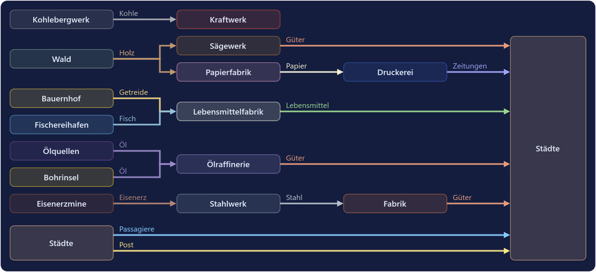
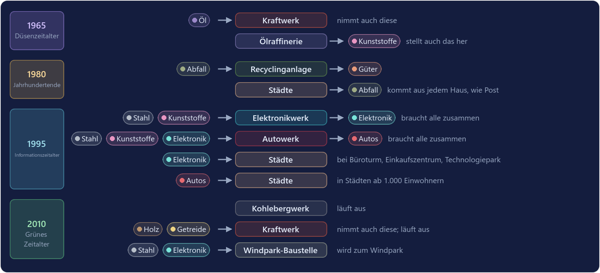

Industrieketten
Was wohin geht.
Rohstoffe gehen an einen Betrieb, der daraus etwas macht, das eine Stadt will. Jeder Pfeil ist eine bezahlte Lieferung, also bringt eine ganze Kette mehrfach Geld. Das sind die Ketten eines Spiels, das 1950 beginnt:


- Ein Werk macht aus jeder gelieferten Einheit etwa eine Einheit seines Produkts, abholbereit ein paar Tage später: mehr mit voller Belegschaft, weniger mit wenigen Arbeitern (siehe Arbeiter).
- Kohle endet im Kraftwerk: Dort kommt nichts heraus.
- Holz hat zwei Abnehmer: Das Sägewerk macht Güter daraus, die Papierfabrik Papier für die Druckerei, die bei einer der größten Städte steht.
- Zeitungen veralten nach 2 Tage, also schnell befördern: Lkw, Triebwagen und Postflugzeuge nehmen sie mit. Jedes Haus einer Stadt mit 150 Einwohnern oder mehr nimmt sie an.
- Ab und zu ändert ein Betrieb seine Produktion. Wird der Großteil seiner Fracht abgeholt oder hat er genug Belegschaft, wächst er viel eher, als dass er schrumpft.
- Weltkarte (M) zeigt, wohin jede Industrie auf deiner Karte liefern könnte.
Die Epochen ändern die Ketten
Jede neue Epoche bringt neue Industrien und gibt alten neue Fracht. Eine neue Art von Industrie eröffnet auf der Karte, sobald ihre Epoche beginnt (in einem später begonnenen Spiel ist sie von Anfang an da).


- Zwei Zutaten: Das Elektronikwerk braucht Stahl und Kunststoffe zusammen. Es hält, was du bringst, bis das andere kommt, und jede Tonne Stahl mit einer Tonne Kunststoffe ergibt etwa zwei Kisten Elektronik.
- Abfall kommt aus jedem Haus im Einzugsgebiet einer Station, so wie Post. Eine Recyclinganlage macht Güter daraus.
- Elektronik bringt viel, verdirbt aber in Tagen: schnelle Lkw, Züge oder Frachtflugzeuge.
- Drei Zutaten: Das Autowerk braucht Stahl, Kunststoffe und Elektronik zusammen, und je eine Einheit von allen dreien ergibt etwa drei Autos. Sein Fenster zeigt, welche Zutat es bremst.
- Autos bringen viel, sind aber sperrig: Nur der Atlas Car Transporter und Autotransportwagen fahren sie, 10 pro Wagen. Städte ab 1.000 Einwohnern nehmen sie.
- Windpark-Baustellen brauchen 1.000 Tonnen von Stahl und 600 Kisten von Elektronik; ist beides geliefert, wird aus der Baustelle ein Windpark. Städte im Umkreis von 24 Felder warten dann nur noch 80% so lange zwischen zwei Wachstumsschüben, und die Firmen, die geliefert haben, teilen sich bis zu +25 Ansehen bei ihren Gemeinderäten, je nachdem, was jede gebracht hat.
Eröffnungen und Schließungen
- Alle paar Jahre eröffnet ein neuer Betrieb, jeder Art, die es auf der Karte gibt: eine Mine, ein Bauernhof, ein Wald, eine Ölquelle, eine Bohrinsel oder ein Fischereihafen, wo Platz ist, ein Werk in der Nähe derer, die liefern, was es nimmt. Er entsteht nie auf Bebautem.
- Bringt eine Ära eine neue Art von Industrie, eröffnet jeden Monat eine, bis die Karte ihren Anteil hat.
- Eine Mine, ein Bauernhof oder eine Ölquelle, die zwei Jahre lang niemand bedient hat und deren Produktion auf 75% des Üblichen gefallen ist, kann in Schwierigkeiten geraten. Wem Personal fehlt, den trifft es zuerst.
- Die Nachrichten warnen ein Jahr vor der Schließung, und Fenster und Karte nennen den Tag. Wer die Fracht vorher abholt, hält den Betrieb offen.
- Werke schließen nie (außer Kraftwerken, siehe unten), und auch nicht der letzte Betrieb einer Art, sodass jede Kette möglich bleibt.
- Auslaufende Industrien eröffnen nicht mehr. Ab 2010 kann auch ein Kraftwerk, das zwei Jahre lang niemand beliefert hat, in Schwierigkeiten geraten und schließen.
- Schließt einer, liefern die Stationen daneben seine Fracht nicht mehr, und Rivalen geben die Linien auf, die ihn bedient haben. Eine Bohrinsel nimmt ihren Hafen mit.
Wie viel jede Industrie produziert, steht in Industrietabelle.